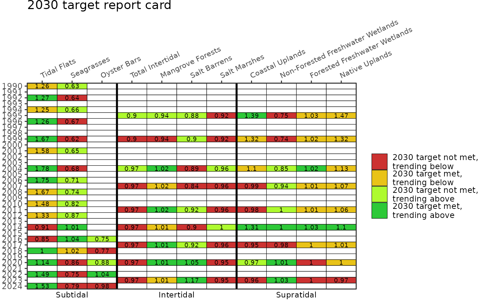
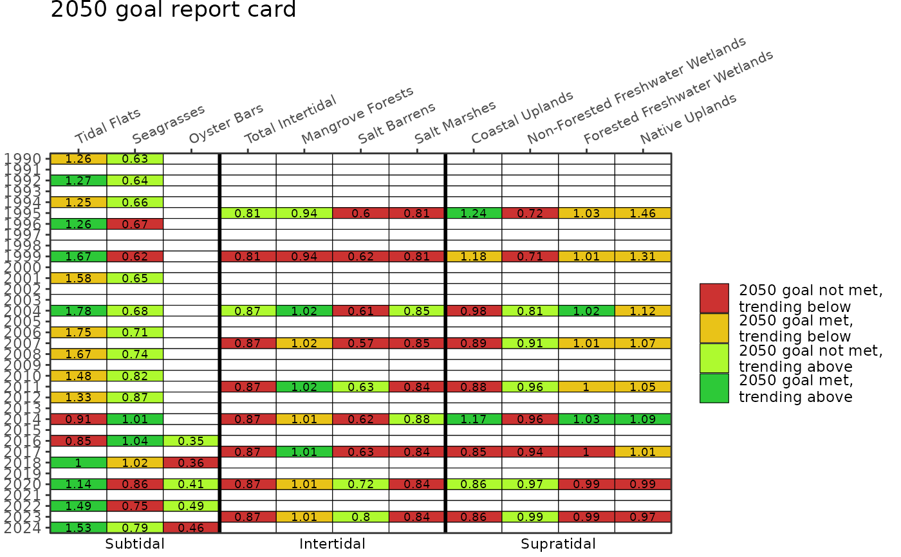
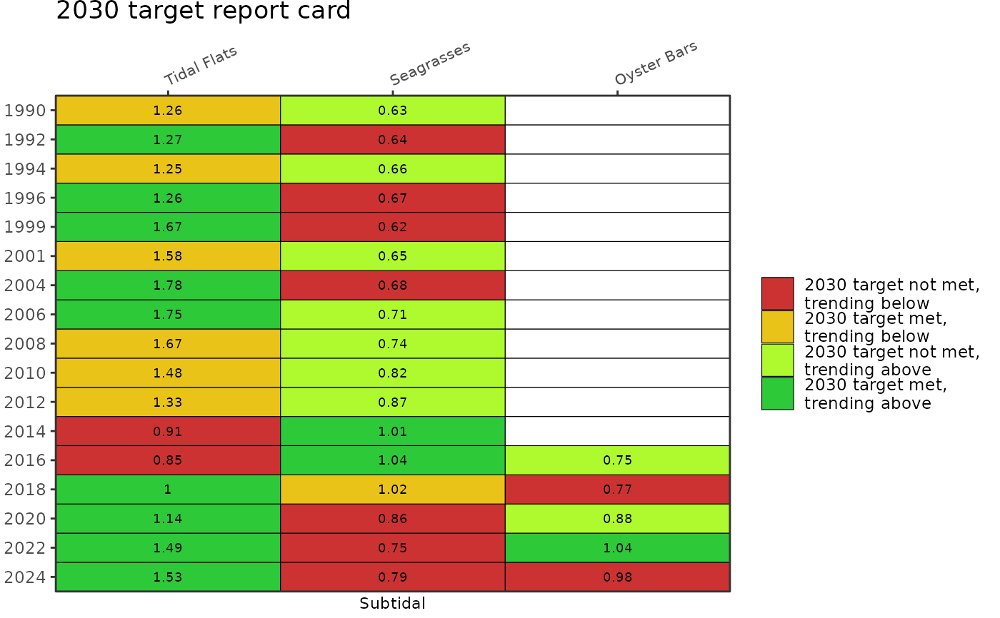
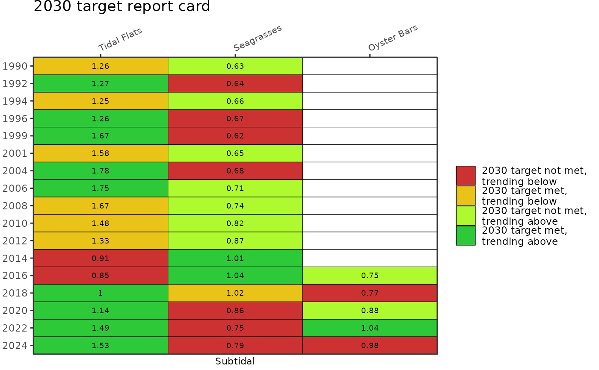

Show Habitat Master Plan progress report card
Usage
show_hmpreport(
acres,
subtacres,
hmptrgs,
typ,
twocol = FALSE,
strata = c("Subtidal", "Intertidal", "Supratidal"),
totintertid = TRUE,
ycollapse = FALSE,
text = 2.5,
xang = 25,
family = NA,
width = NULL,
height = NULL
)Arguments
- acres
data.framefor intertidal and supratidal land use and cover of habitat types for each year of data- subtacres
data.framefor subtidal cover of habitat types for each year of data- hmptrgs
data.frameof Habitat Master Plan targets and goals- typ
character string indicating
"targets"or"goals"- twocol
logical indicating only two colors are shown if target or goals are met and symbols indicate the likelihood of attaining targets or goals, see details
- strata
character string indicating with strata to plot, one to many of
"Subtidal","Intertidal", and"Supratidal"- totintertid
logical indicating if total intertidal (mangroves, salt marsh, salt barrens) is shown
- ycollapse
logical indicating if the y-axis is collapsed to year with data, see details
- text
numeric indicating text size for proportion of target or goal met for habitat types shown in each cell types or symbols if
twocol = T, useNULLto suppress- xang
numeric for angle of habitat labels on the x-axis (top)
- family
optional chr string indicating font family for text labels
- width
numeric for width of the plot in pixels, only applies of
plotly = TRUE- height
numeric for height of the plot in pixels, only applies of
plotly = TRUE
Value
A ggplot2 object showing overall progress in attaining Habitat Master Plan targets or goals.
Details
If twocol = F, colors indicate both if the target/goal is met and the likelihood of attaining the target/goal by 2030/2050. Red indicates the target/goal is not met and will likely not be met by 2030/2050 (trending below target/goal), yellow indicates the target/goal is met although it likely will not be met by 2030/2050 (trending below target/goal), light green indicates the target/goal is not met although it will likely be met by 2030/2050 (trending above target/goal), and green indicates the target/goal is met and will likely be met by 2030/2050 (trending above target/goal). Numbers in each cell show the proportion of the target or goal met at each year where data are available. If twocol = T, the colors indicate if the goal is met (green) or not met (red) and the symbols in each cell indicate if the goal is likely to be met (up arrow) or not (down arrow) by 2030/2050. In both cases, the colors and trends are relative to the 2030 targets or 2050 goals using the typ argument.
The report card provides no information on artificial reefs, living shorelines, and hard bottom habitats. These habitats are not assessed in routine data products from the Southwest Florida Water Management District, although targets and goals are provided in the Habitat Master Plan.
The subtidal data in subtacres and the inter/supratidal data in acres are provided as different datasets by the Southwest Florida Water Management District. The years in each dataset typically do not match and each dataset is collected at approximate 2 to 3 year intervals. By default, year on the y-axis is shown as a continuous variable, where gaps are shown in years when each dataset was unavailable. Use ycollapse = TRUE to remove years without data.
Examples
# view summarized data for report card, targets
show_hmpreport(acres, subtacres, hmptrgs, typ = "targets")

# view summarized data for report card, goals
show_hmpreport(acres, subtacres, hmptrgs, typ = "goals")

# remove empty years
show_hmpreport(acres, subtacres, hmptrgs, typ = "targets", ycollapse = TRUE)
 # select only subtidal
show_hmpreport(acres, subtacres, hmptrgs, typ = "targets", ycollapse = TRUE, strata = 'Subtidal')

# select only subtidal
show_hmpreport(acres, subtacres, hmptrgs, typ = "targets", ycollapse = TRUE, strata = 'Subtidal')
